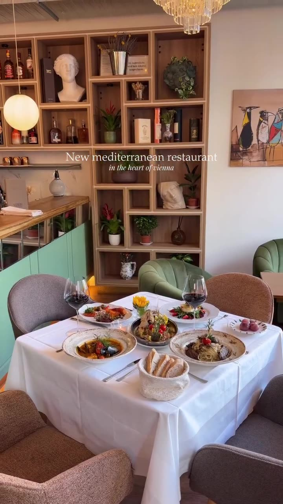
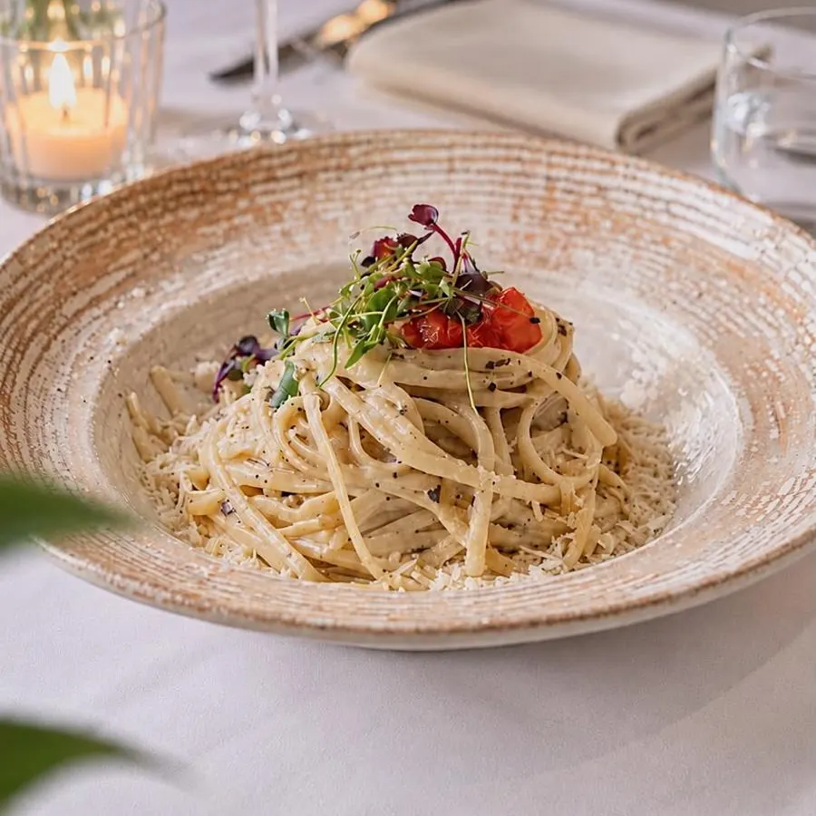
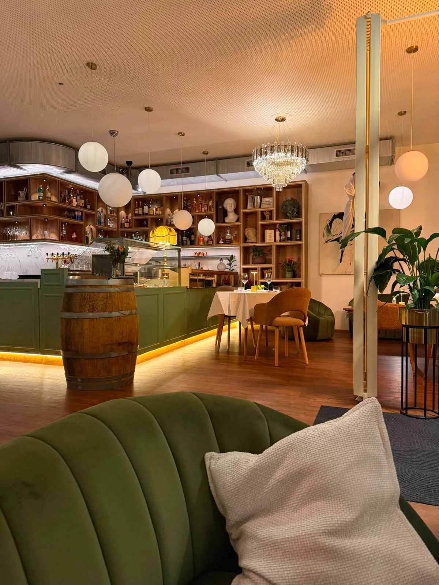

November 2026
Gansl und Wild
Knusprige Ganslkeule mit Apfelrotkraut und Maroni, Ganslcremesuppe, Gänseleber, Rehragout und zum Abschluss ein ofenwarmer Bratapfel. Nur bis Ende November.
Mehr Details
Der mediterrane WienerAm Stadtpark · 1010 Wien
Wiener Küche
mit mediterranem Herz
Dr.-Karl-Lueger-Platz 3, direkt an der U3 Stubentor. Täglich ab 12 Uhr, Bar bis Mitternacht. Abends lieber reservieren, kostenlos in einer Minute.
★ 4,4 auf Google · über 1.500 Bewertungen
Abendessen zu zweit · After Work an der Bar · Gansl und Wild · Weihnachtsfeier · Geburtstag und Feiern
Willkommen im VIENERO
Unter Kristalllustern und warmem Licht kochen wir die Wiener Klassiker und das Beste vom Mittelmeer, mit Pasta aus unserer eigenen Manufaktur. Mittags und abends, jeden Tag. Und wenn die Küche schließt, geht es an der Bar weiter, bis Mitternacht.

Goldbraun und luftig
vom Kalb
In soufflierter Panade herausgebacken, mit Petersilienkartoffeln und auf Wunsch Preiselbeeren. So, wie es in Wien sein soll.
Mehr erfahren
Hausgemacht in Wien
mit schwarzem Trüffel
Unsere Pasta machen wir selbst, in unserer hauseigenen Manufaktur in Wien. Dazu Trüffelbutter, Parmesan und frisch gehobelter schwarzer Trüffel. Falstaff zählt sie zu den besten Trüffelgerichten Wiens.
Mehr erfahren
Bis Mitternacht
Signature Cocktails und Wein
Ein Aperitif vor dem Essen, ein Glas Wein danach oder einfach der Abend an der Theke. Weine aus Österreich, Frankreich und Italien.
Zur BarDas Beste aus Küche und Saison
November 2026
Knusprige Ganslkeule mit Apfelrotkraut und Maroni, Ganslcremesuppe, Gänseleber, Rehragout und zum Abschluss ein ofenwarmer Bratapfel. Nur bis Ende November.
Mehr Details
31. Dezember 2026
Ein festliches Menu mit Auster, Hummer und Rinderfilet Rossini, Champagner um Mitternacht und danach DJ bis 2 Uhr früh. 169 € pro Person.
Mehr Details
Feiern und Gruppen
Geburtstag, Hochzeit, Firmenfeier oder Teamessen: Bis 70 Gäste im ganzen Lokal oder bis 40 im eigenen Bereich, mit einem Menu nur für Sie. Ab 50 Personen kommen wir mit Catering auch zu Ihnen.
Feier anfragenFirmenfeier · Catering ab 50 Personen · Hochzeit, Geburtstag oder Event anfragen
Eindrücke
Küche bis 22:00 Uhr, Bar bis 24:00 Uhr. Kein Ruhetag.
Ab 1. Februar 2027 täglich 16:00 bis 24:00, Küche bis 23:00.
Reservierung@vienero.at
Tisch online reservieren
Für Gruppen ab zehn Personen: Gruppen und Feiern anfragen.
1010 Wien, direkt am Stadtpark
U3 Stubentor vor der Tür
In Google Maps öffnen
Mit Klick wird Google Maps geladen und Daten werden an Google übertragen.
Mitten in Wien
Das VIENERO liegt in der Wiener Innenstadt am Dr.-Karl-Lueger-Platz, dort wo die Wollzeile auf den Stubenring trifft. Der Stadtpark ist gleich ums Eck, der Stephansdom zehn Minuten zu Fuß, die U3 Stubentor hält direkt vor der Tür. Mitten im 1. Bezirk, direkt an der Ringstraße und wenige Gehminuten von den Hotels am Parkring und Schubertring. Wer uns noch als Le Pic kennt: gleiche Adresse, gleiche Gastgeber, neuer Name.
Auf den Teller kommt, was Wien und das Mittelmeer gemeinsam haben: unser Wiener Schnitzel in luftig soufflierter Panade, Pasta al Tartufo mit schwarzem Trüffel, Ribeye und Filetsteak, Wolfsbarsch im Ganzen vom Grill, Vitello Tonnato und Burrata. Mittags und abends gibt es das ganze Menu, im November auch Gansl und Wild, und an der Bar gibt es Signature Cocktails und Weine aus Österreich, Frankreich und Italien bis Mitternacht.
Sie suchen ein Lokal in 1010 Wien, in dem man mittags wie abends gut isst und danach noch an der Bar bleibt? Wir haben täglich geöffnet, ohne Ruhetag. Für Gruppen ab zehn Personen, Hochzeiten, Firmenfeiern und Teamessen gibt es zwei Räume nebeneinander und auf Wunsch das ganze Lokal für bis zu 70 Gäste. Für größere Events ab 50 Personen bieten wir Catering mit Service, Getränken und Deko an.
Ob Mittagessen im ersten Bezirk, Abendessen vor dem Konzert oder ein Drink nach der Arbeit: Wir freuen uns auf Sie. Tisch reservieren oder anrufen unter 01 913 70 05.
Gansl und Wild · Weihnachtsfeier bis 70 Gäste · Feiern und Events · Gruppen, Hochzeiten und Firmenfeiern · Firmenfeier in Wien · Catering in Wien · Weihnachten 24. und 25.12. · Silvester mit DJ · Pasta · Trüffelpasta · Steak · Dry Aged Steak · Fisch · Vegetarisch · Wiener Schnitzel · Restaurant beim Stephansdom · Restaurant am Stadtpark · Restaurant beim Konzerthaus · Wein · Cocktailbar · Fragen und Antworten · Blog